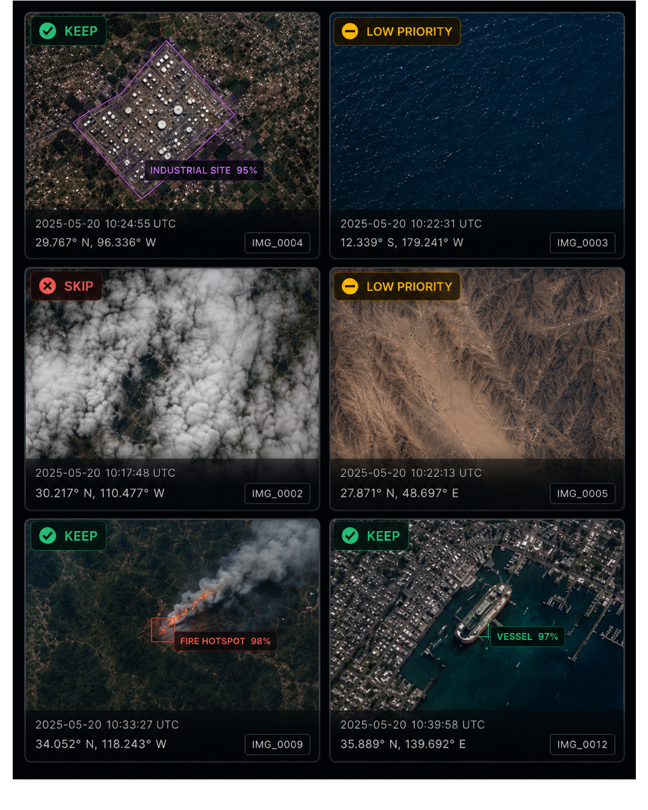
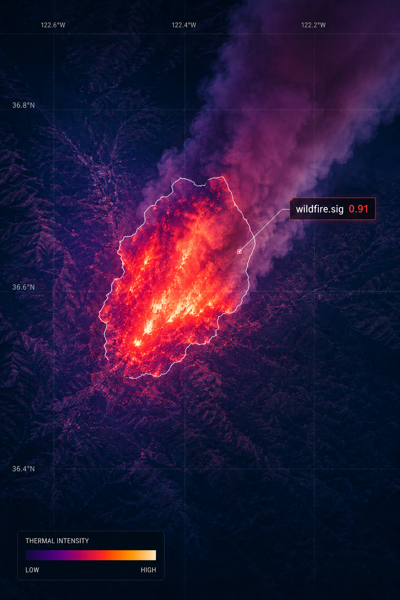
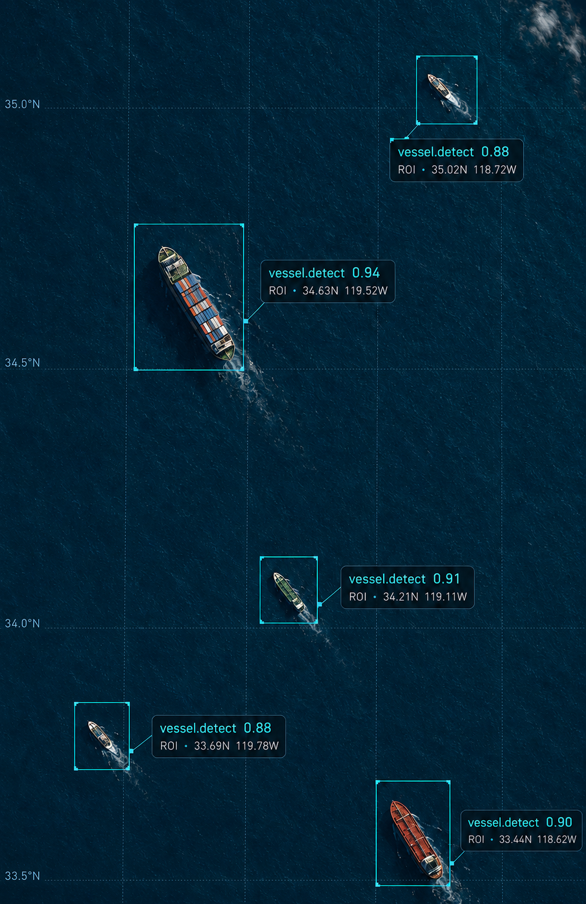
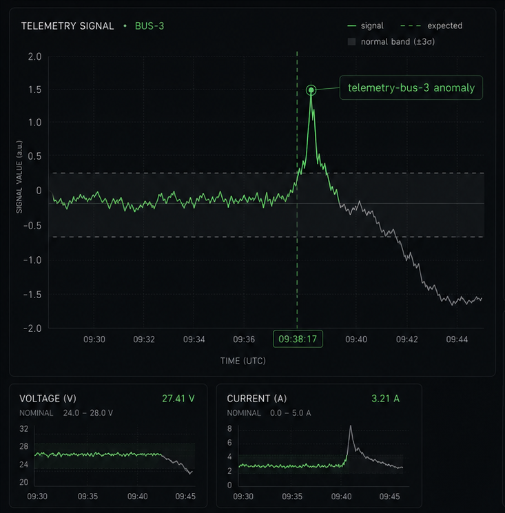
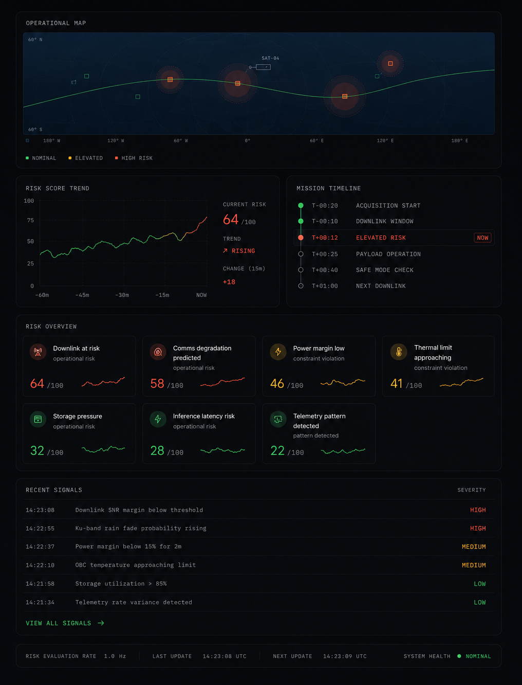
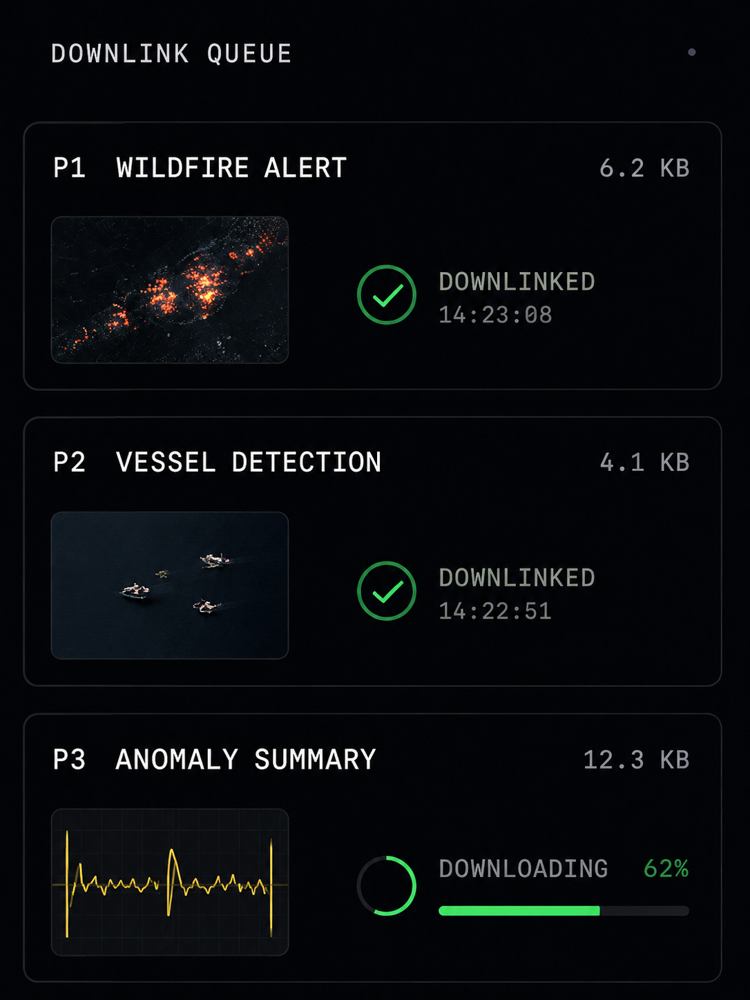
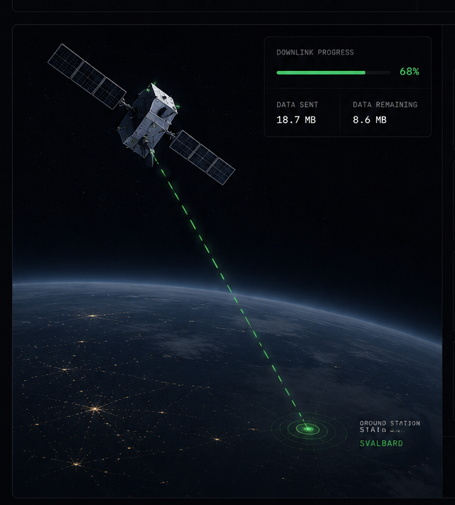
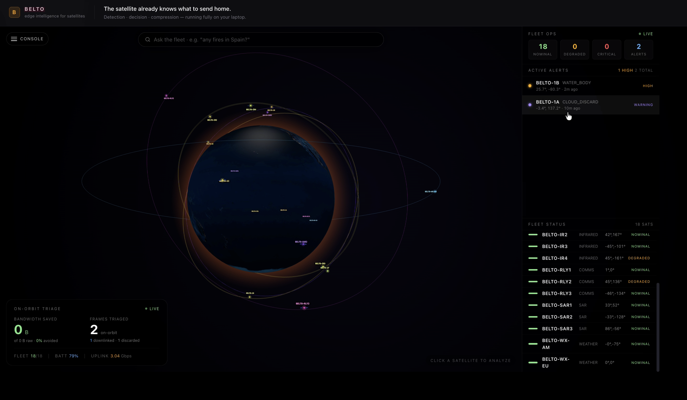

01
Raw data overload
Earth observation, telemetry, and onboard sensors can generate more data than operators can transmit in time.
Orbital Edge AI Runtime
belto runs mission AI onboard satellites and constrained edge systems, turning raw sensor streams into compact, downlink-ready insight.
Problem
Orbital systems operate under hard limits: narrow downlink windows, restricted power, limited memory, and mission-critical timing.
Earth observation, telemetry, and onboard sensors can generate more data than operators can transmit in time.
Connectivity windows are brief, intermittent, and expensive. Every byte must justify the trip to the ground.
Cloud-first workflows wait for data to land before teams can detect, prioritize, or act.
Solution
belto packages models, rules, and mission constraints into deployable jobs that run close to the sensor.
Run inference before raw data leaves the spacecraft or remote system.
Transmit alerts, detections, summaries, and prioritized outputs instead of unnecessary raw volume.
Define every job around bandwidth, latency, power, memory, and operating context.
Workflow
Bundle models, preprocessing rules, thresholds, and mission limits.
Test behavior against compute, memory, latency, and bandwidth constraints.
Execute inference and logic near the source of the data.
Send structured insight, alerts, and summaries during narrow transmission windows.
Use Cases
Built for missions where insight is more valuable than raw volume.

Identify useful frames before downlinking full sensor captures.

Flag likely wildfire signatures for faster operational awareness.

Prioritize maritime detections and regions of interest.

Surface unusual signals from onboard telemetry streams.

Detect patterns that may indicate operational risk.

Choose what should transmit first when connection windows are limited.

Keep AI workflows useful when links are intermittent or constrained.
Tell us about the constraints. We'll show you what onboard inference looks like for your stack.
Discuss PartnershipProduct
belto turns AI models, rules, and operating limits into deployable mission packages optimized for constrained edge hardware.
Bundle models, preprocessing, thresholds, metadata, and mission limits into one deployable package.
Preview how a package behaves under compute, memory, latency, and bandwidth constraints.
Inspect what ran, what was detected, what was compressed, and what would be transmitted.
Demo
Deploy an AI package to a simulated satellite, inspect mission logs, and see how raw data becomes downlink-ready insight.

Research
Read the belto research record for the technical direction behind onboard AI, constrained inference, and orbital edge deployment.
View ResearchContact
belto is built for teams exploring satellite intelligence, constrained inference, and mission-ready edge AI workflows.